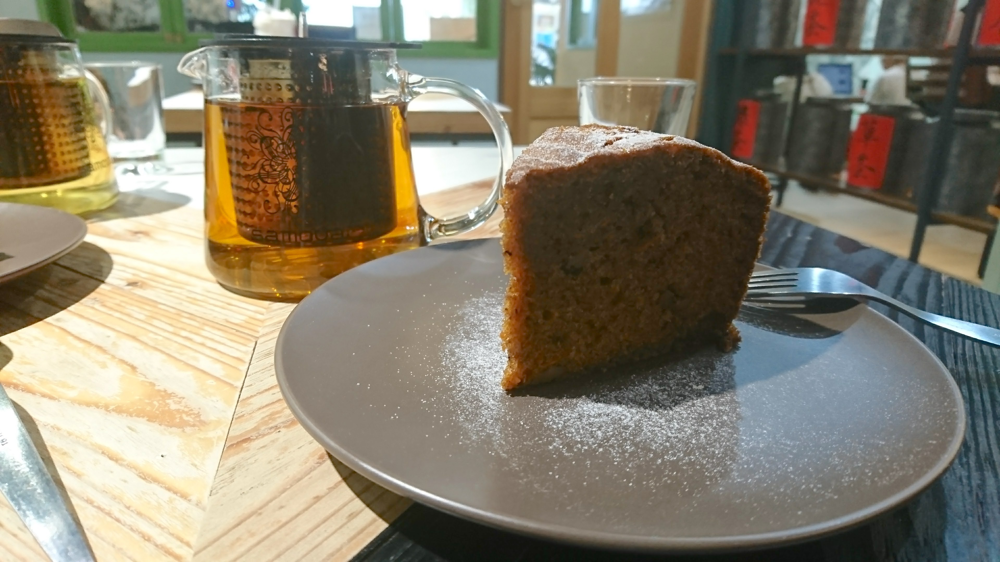
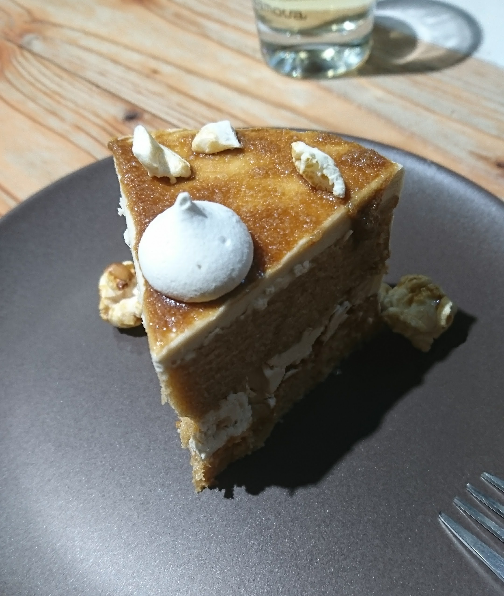
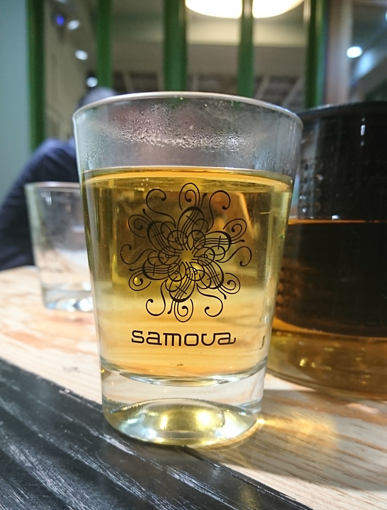
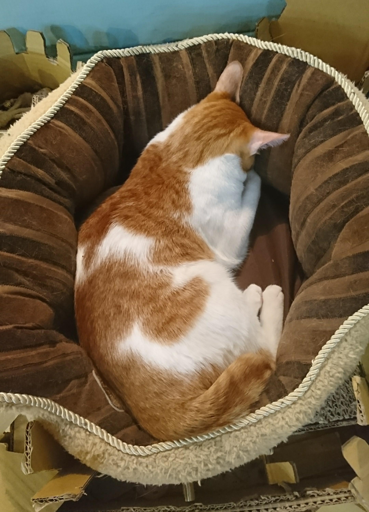
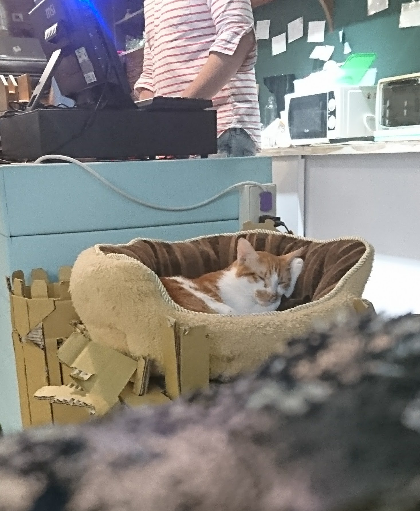

【捷運台電大樓】城市草倉 以貓佐茶溫暖你的心
▋靜巷裡的一抹綠
城市草倉位處於溫州街咖啡店一級戰區，咖啡店多如繁星壽命也常常短得像流星，城市草倉自用現沖熱茶殺出一條血路。


超不起眼的招牌，一閃神就要走過頭。 店如其名，滿滿綠意
▋小店裡的一壺茶
你看得懂這些茶是什麼嗎？沒關係我也看不懂，菜單上有簡略寫一下茶的來歷和口感差異，跟著感覺點就對了啦反正也喝不出來。
甜點看起來都很好吃，但常常在缺貨，隨緣。


這天想吃的甜點也缺貨，我點了紅圓奶和紅蘿蔔蛋糕。
茶很順喝起來很舒服，蛋糕也好吃，可是裡面有一條一條的紅蘿蔔絲，吃的時候不要太仔細看，有點噁心。



牛奶糖蛋糕，很美，但是有點過甜，還是拍照就好。 不可思議的杯子，茶裝在裡面以為自己在喝啤酒。
▋角落裡的一隻貓
沒什麼好說的，乖乖看貓就好。


一般聽到茶館會覺得是貴婦聚集地，草倉是我去過最平易近人的茶館，推薦給喜歡喝茶和喜歡貓的平凡人。